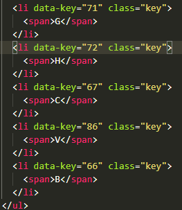
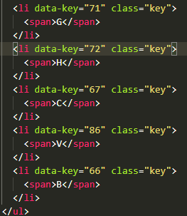

Bateria
Kit de bateria feito usando apenas CSS, HTML e JavaScript. Utilizando o atributo HTML 'data-'.E através de EventListerners
ouvimos pelo evento de 'keydown'(pressionar tecla) e atribuímos um som de acordo com o código do teclado.
- Desenhando os botões
- Data Key + KeyCode
Os botões são feitos com 'li' dentro de uma 'ul'.
 

Neste pequeno projeto usamos a propriedade keyCode já que cada tecla no teclado gera um código, como podemos ver no site https://keycode.info/.
Embora ainda comum, não é mais recomendado utilizar o keyCode, devido a imcompatibilidade de browsers.
Deve-se evitar usá-lo sempre que possível. Ao invés, deve-se utilizar o 'KeyboardEvent.code', caso esteja implementado. Infelizmente alguns browsers ainda não tem, então, tenha cuidado.
fonte: MDN
Veja o resultado abaixo clicando na imagem abaixo

Relógio
Relógio feito usando apenas CSS, HTML e JavaScript.
Criando um novo objeto Date() para tratar a hora. Desenvolvi a lógica
e fiz os movimentos com o efeito rotate() de CSS.
- Desenhando o Relógio
- new Date()
A borda do relógio será feita com a div 'clock'. Dentro dela, a div 'clock-body' será onde trataremos os ponteiros do relógio, que serão divs vazias.
Na div clock, um border-radius de 50% com border de 10px 'solid' branca é suficiente para transforma-la em uma circunferência, para visualizar é preciso que já tenhamos um background-color no nosso body(que seja diferente de branco).
Criando uma variável 'now' atribuimos a ela o objeto Data(), com isso conseguimos acessar a hora, minuto e segundos atuais.
Note que objetos JavaScript Date só podem ser instanciados chamando JavaScript Date como um construtor:
chamá-lo como uma função regular (ou seja, sem o operador new) irá retornar uma string ao invés de um
objeto Date; ao contrário de outros tipos de objetos JavaScript, objetos JavaScript Date não têm sintaxe
literal.
fonte: MDN